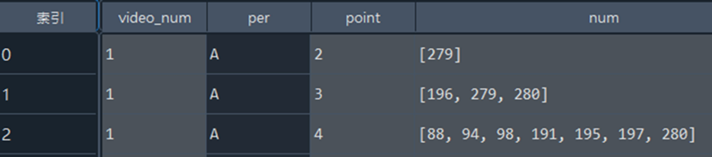
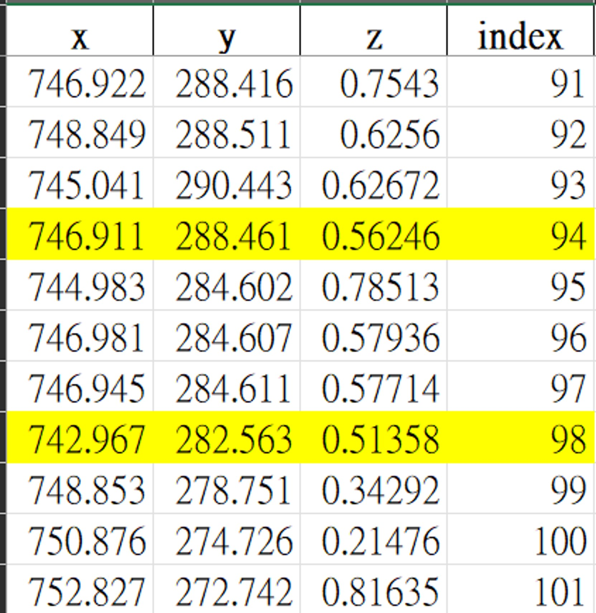
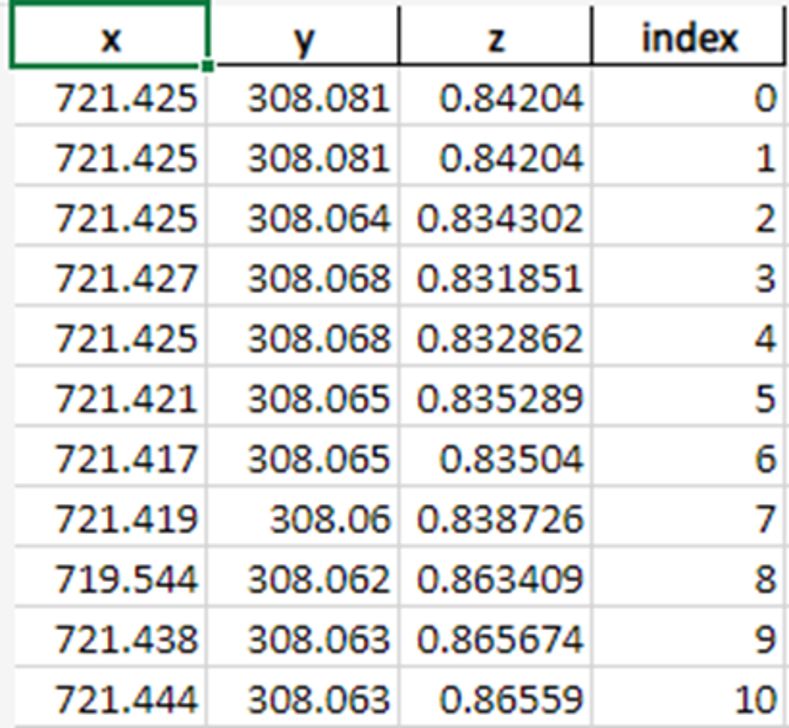
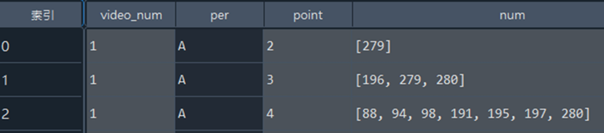
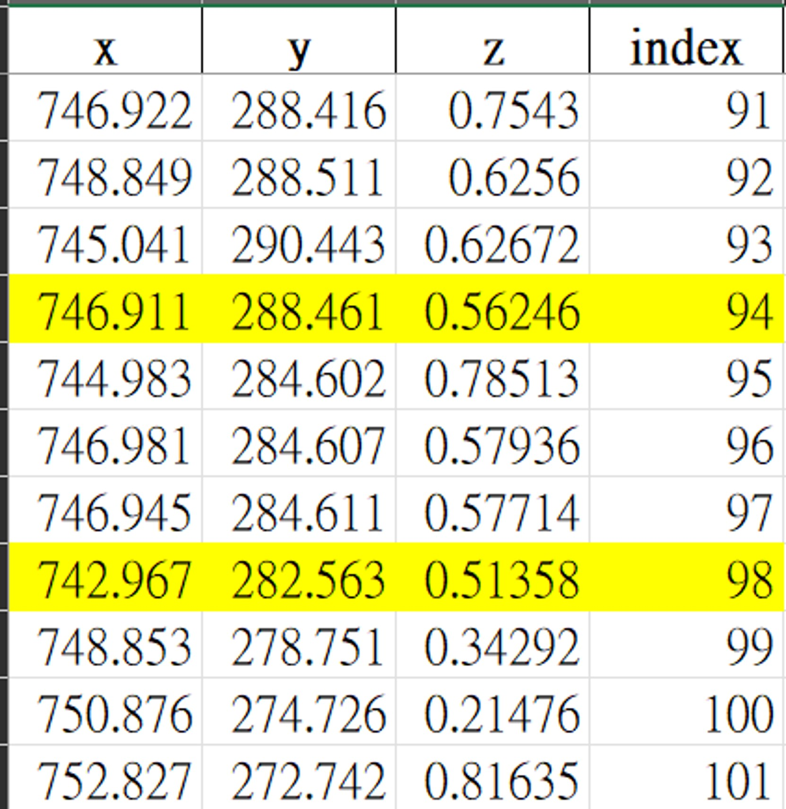
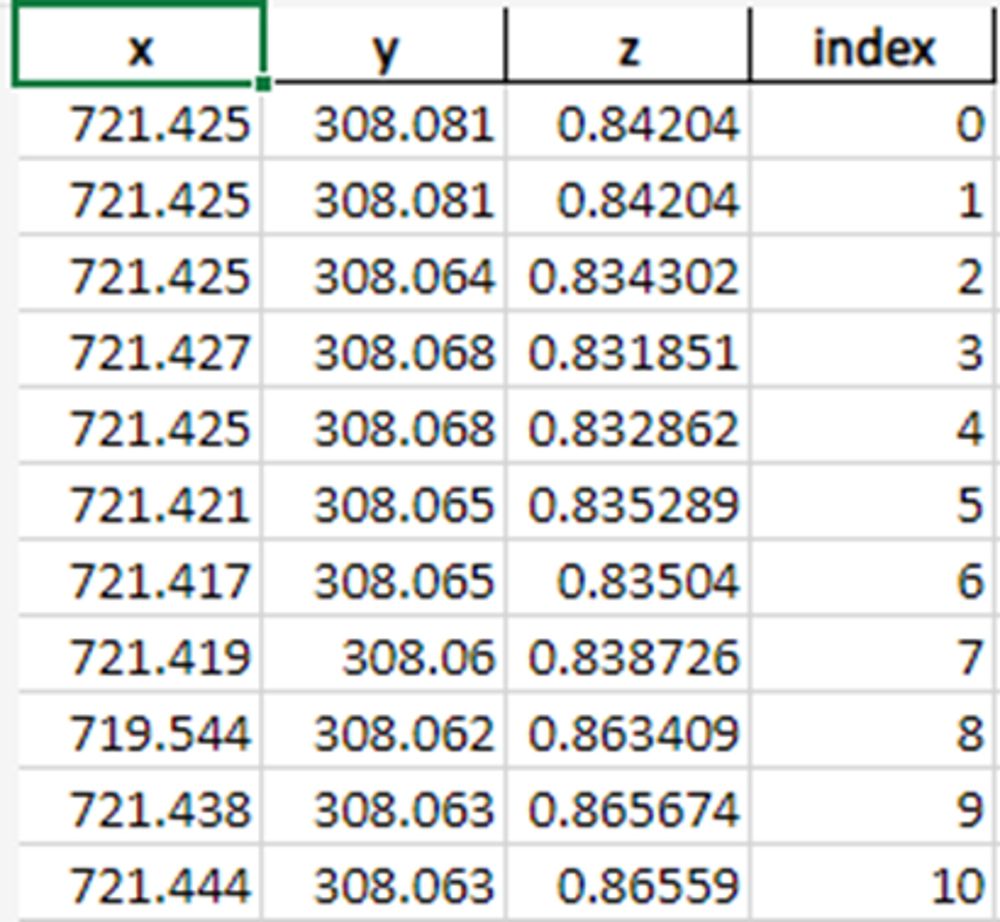

讀取第一個json檔
使用openpose所提供的執行檔，以獲取25個人物節點之json檔及影片。
原始影片(上) 有人物節點影片(下)
(點選播放鍵即可播放。)
原始資料knn補值
將json檔整理後切割出首幀選手座標範圍，再將每個節點獨立整理成list檔，
再統一差補遺失值。
Arima檢查軌跡
利用Arima檢查各點運動軌跡，避免出現運動的不連貫。
 資料輸出
輸出CSV檔。
使用openpose所提供的執行檔，以獲取25個人物節點之json檔及影片。
原始影片(上) 有人物節點影片(下)
(點選播放鍵即可播放。)
將json檔整理後切割出首幀選手座標範圍，再將每個節點獨立整理成list檔，
再統一差補遺失值。
利用Arima檢查各點運動軌跡，避免出現運動的不連貫。
 輸出CSV檔。
靜宜大學資料科學暨大數據分析與應用學系2024羽球辨識系統專題網頁